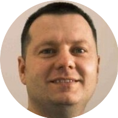

|  |
Jaroslaw JakubowiczEmbedded Software engineer at Schneider Electrict. |
| General | Rating | Language | Rating | Language | Rating |
| Computer Skilss | ⭐⭐⭐⭐ | Java | ⭐⭐⭐ | C | ⭐⭐⭐⭐ |
| Innovation | ⭐⭐⭐⭐⭐ | Java Script | ⭐⭐ | MATLAB | ⭐⭐⭐⭐ |
| Communication | ⭐⭐⭐⭐ | HTML | ⭐⭐⭐ | VHDL | ⭐⭐⭐ |
| Team player | ⭐⭐⭐⭐⭐ | CSS | ⭐⭐ | Python | ⭐⭐⭐ |
| Arduino | ⭐⭐⭐ | Android | ⭐⭐ |